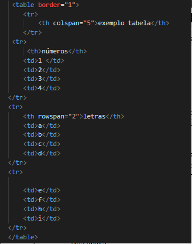

É uma tag que define um conjunto estruturado de dados com linhas e colunas. Para defeninir uma tabela usamos o comando table para inicializar sua estruturação. O comando tr inicializa uma linha enquanto o comando td permite inserir os dados das celúlas de tal linha, formando assim as colunas da tabela. O comando th faz que os dados inseridos sejam lidos como "títulos" e o atributo colspan="x" nas tags de inserção de dados, x quer dizer o número de colunas que a célula deve ocupar, já no atributo rowspan="x" o x significa a quantidaade de linhas que determinada célula deve ocupar Exemplo:
exemplo tabela
números
1
2
3
4
letras
a
b
c
d
e
f
h
i
Sintaxe:

- del e ins
A tag del para excluir um texto no documento o qual é sinalizado geralmente com um risco, com a tag ins é possível inserir um novo texto o qual geralmente é sublinhado
Exemplo:
Minha viagem dos sonhos é para os Estados Unidos o Japão
Sintaxe:
- sub
Define que detrminado texto será subscrito, sendo apresentado meio caractere abaixo da linha normal e geralmente em uma fonte menor.
Exemplo:
A fórmula química da água é o H2O
Sintaxe:
- sup
Define que determinado texto será sobrescrito, sendo apresentado meio caractere acima da linha normal e geralmente em uma fonte menor.
Exemplo:
Calcule a potência 73
Sintaxe:
- blockquote
Indica que o texto é uma citação longa de outra fonte onde usa-se o atributo cite para inserir a URL.
Exemplo:
Nove em cada dez brasileiros tomariam qualquer vacina contra covid
De acordo com levantamento da CNI, dibvulgado pelo Correrio Braziliense mostra 43% dos entrevistados gostariam de escolher o imunizante, mas apenas 9% deixariam de se vacinar se não houvesse a marca de preferência. População vê avanços na vacinação e está mais confiante para frequentar comércio
Sintaxe:
- q
Indica que o texto é uma pequena citação que não requer marcação de parágrafo.
Exemplo:
Gelerias, as grandes defensoras da estabilidade do clima do planeta
Consequência do degelo são as alterações climáticas
Sintaxe:
- abbr
Faz a marcação de abreviaturas, pode conter o atributo title que define a descrição da abreviação.
Exemplo:
A demarcação de terras indígenas são áreas interditadas pela
Funai para a proteção dos povos nativos
Sintaxe:
- address
Utilizada para inserir informações de contato.Tais informações podem se referir a e-mail, endereço, número de teelfone, rede social, etc.
Exemplo: Galeria Autodidata
Trajano Grácia, 1260 CEP 84507-060, Irati-Pr
Sintaxe:
- cite
Define o título de um trabalho artístico que pode ser um livro, um poema,uma música, um filme, etc.
Exemplo:
O Poema No Meio do Caminho de 1928 foi escrito por Carlos Drummond de Andrade.
Sintaxe:
- bdo
Utilizada para alterar a direção do texto, usa-se o atributo dir inserindo os valores: ltr para o texto ficar da esquerda para a direita e rtl para o texto ficar da direita para a esquerda.
Exemplo:
Esse texto ficará no sentido direita-esquerda
Sintaxe:
- code
Define um fragmento de código de computador no documento HTML, formatando o texto fazendo-o parecer antigos estilos de computador. Geralmente o texto encontrado na tag é apresentado em fonte monoespaçada.
Exemplo: Esse texto está inserido em uma tag code
Sintaxe:
- pre
Define um texto como pré-formatado, sendo visualizado do modo como foi editado no código HTML na fonte monospace.
Exemplo:
Este texto está inserido na tag pre
Sintaxe:
- kbd
É utilizada para representar a entrada de texto a partir de uum teclado ou outro dispositivo de entrada de texto.
Exemplo:
Para desfazer uma ação pode-se utilizar o atalho do Windows Ctrl + Z